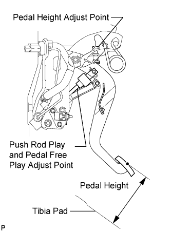
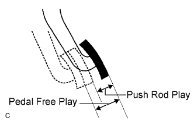
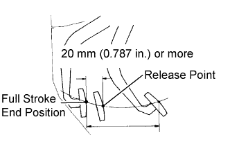

CLUTCH PEDAL (for LHD) > ADJUSTMENT |
| 1. INSPECT AND ADJUST CLUTCH PEDAL SUB-ASSEMBLY |
 |
Check that the clutch pedal height is correct.
Adjust the clutch pedal height.
Loosen the lock nut and turn the stopper bolt or clutch switch until the height is correct. Tighten the lock nut.
 |
Check that the clutch pedal free play and push rod play are correct.
Depress the clutch pedal until the clutch resistance begins to be felt.
Gently depress the clutch pedal until the resistance begins to increase a little.
Adjust the clutch pedal free play and push rod play.
Loosen the lock nut and turn the clutch push rod until the clutch pedal free play and push rod play are correct.
Tighten the lock nut.
After adjusting the clutch pedal free play and push rod play, check the clutch pedal height.
 |
Check the clutch release point.
Pull the parking brake lever and chock the wheels.
Start the engine and allow it to idle.
Without depressing the clutch pedal, slowly move the shift lever to R until the gears engage.
Gradually depress the clutch pedal and measure the stroke distance from the point that the gear noise stops (release point) up to the full stroke end position.